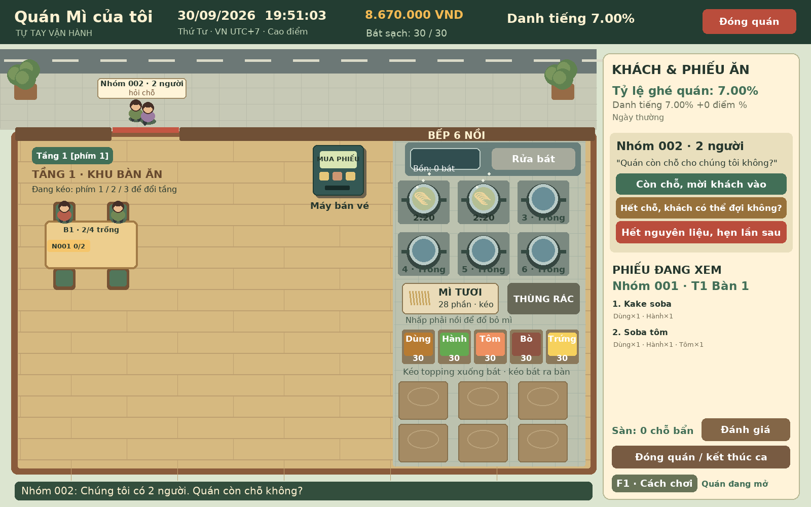

Còn chỗ, mời vào!
Trả lời từng nhóm khách, nhận phiếu ăn từ máy bán vé rồi kéo khách đến chỗ ngồi. Ghép bàn khi cần để ai cũng có một chỗ.
GAME MÔ PHỎNG KINH DOANH · TIẾNG VIỆT
Một quán nhỏ. Từng bát mì.
Câu chuyện của bạn.
Game mô phỏng kinh doanh quán mì miễn phí của Đỗ Văn Phi. Kéo ghế mời khách. Canh nồi mì vừa chín. Tự tay điều hành hoặc thuê nhân viên biến một cửa hàng bé xinh thành quán quen của mọi người.
Windows 1.7.4 · Android 1.8.0-beta.4 · Miễn phí · Tự lưu trên máy

MỖI NGÀY, MỘT NHỊP QUÁN RIÊNG
Tự tay vận hành hoặc thuê người hỗ trợ.
Bạn quyết định cách quán hoạt động.
Trả lời từng nhóm khách, nhận phiếu ăn từ máy bán vé rồi kéo khách đến chỗ ngồi. Ghép bàn khi cần để ai cũng có một chỗ.
Thả mì vào nồi, canh 3 phút 30 giây rồi vớt. Kéo topping vào bát và mang món đến đúng bàn. Khách sẽ nhận ra sự khác biệt.
Thu bát bẩn, bấm rửa, lau bàn và dọn quán. Khép lại một ca làm sạch sẽ rồi xem hôm nay quán lời được bao nhiêu.
QUÁN CỦA BẠN, CÁCH LÀM CỦA BẠN
Khởi đầu với kho trống và danh tiếng 7%. Mua những nguyên liệu đầu tiên, học cách phục vụ rồi từng bước phát triển.
Mở cửa quán đầu tiênTự đặt tên món, chọn nguyên liệu và giá bán. Xem giá vốn để tính phần lãi cho mỗi bát mì.
Mua thêm bàn, ghế và xây tối đa 3 tầng. Sắp chỗ linh hoạt với cơ chế ngồi ghép bàn.
Ký hợp đồng nhà cung cấp để được giá rẻ hơn mua lẻ 3%. Đặt trước 23 giờ, nhận hàng lúc 8 giờ sáng hôm sau.
Đăng bài tuyển và đọc CV. Baito chấm công theo giờ thực làm; nhân viên bếp có ca chuẩn 8 giờ. Xem ngày thiếu người và mời làm thay. Bản Windows có chế độ chạy nền khi máy còn bật.
CHỌN CÁCH GHÉ QUÁN
Cùng một quán mì.
Ba cách bắt đầu.
Mở trình duyệt và trải nghiệm ngay.
Không cần tải hoặc cài đặt game.
Tải bộ cài .exe, cài đặt rồi mở game.
Không cần cài Python.
Tải tệp APK, cài đặt và chơi trên điện thoại.
Chạm, kéo thả và chơi ở màn hình ngang.
Android 8.0 trở lên, Android System WebView cập nhật. Khi cài APK, điện thoại có thể hỏi quyền cài ứng dụng từ trình duyệt. Tự thông báo khi có APK mới. Đây chưa phải bản Google Play. Cài đè beta.4 lên beta.3 để giữ tiến trình. Beta.1/beta.2 dùng khóa khác; hãy giữ bản cũ nếu chưa sao lưu tiến trình.
Xem các bản cập nhật tại GitHub Releases ↗. Bản Windows chưa ký số nên có thể hiện cảnh báo nhà phát hành.
TRƯỚC KHI VÀO QUÁN
Màn hình tải mới là bức tranh một quán mì ấm áp, dùng chung trên web, Windows và Android. Tự chuyển vào game khi dữ liệu sẵn sàng. Giữ dữ liệu đã lưu và thông báo phiên bản mới.
Trên Windows, vào Nhân sự → Chạy nền để bật chạy nền. Nút X ẩn game xuống khay hệ thống; máy cần bật và không ngủ. Chuột phải biểu tượng bát mì để mở lại hoặc lưu và thoát hoàn toàn. Bản web cần giữ trang mở. Trên Android, nhân viên không được đảm bảo tiếp tục làm việc khi hệ thống dừng ứng dụng nền.
Có. Bạn có thể chơi thử trên web hoặc tải bản Windows hoặc Android miễn phí bằng các nút trên trang này.
Bản Windows tự lưu trên máy, trong thư mục %LOCALAPPDATA%\QuanSobaManual. Bản Android lưu riêng trong bộ nhớ ứng dụng trên thiết bị. Bản web không lưu; dữ liệu giữa các bản không đồng bộ với nhau.
Máy tính với chuột và bàn phím phù hợp nhất cho các thao tác kéo thả. Có bản Windows cho máy tính và APK Android cho điện thoại Android 8.0 trở lên. Bản Android chơi bằng cảm ứng ở màn hình ngang.
Bạn có thể gửi mô tả lỗi và ảnh chụp tại GitHub Issues để giúp quán ngày một tốt hơn.